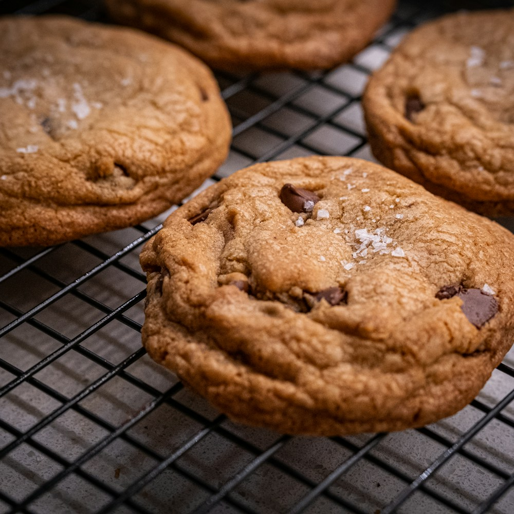

The recipe notebook Baking
Classic chocolate
chip cookies.
Crispy edges. Chewy middles. Plenty of chocolate. A classic batch for lunch boxes, holiday gatherings, or just because.
Let's bake
Times are estimates from the original recipe. Check for golden edges at 9–11 minutes; allow time to cool.
Ingredients
One batch- 2¼ cups all-purpose flour
- 1 teaspoon baking soda
- 1 teaspoon salt
- 1 cup (2 sticks) butter, softened
- ¾ cup granulated sugar
- ¾ cup packed brown sugar
- 2 large eggs
- 2 teaspoons vanilla extract
- 2 cups chocolate chips
- 1 cup chopped walnuts (optional)
Let's make cookies
8 steps-
Preheat the oven
Heat to 375°F (190°C). Line baking sheets with parchment paper.
-
Mix the dry ingredients
In a medium bowl, whisk together flour, baking soda, and salt. Set aside.
-
Cream the butter and sugars
In a large bowl, beat softened butter with both sugars until light and fluffy, about 2–3 minutes.
-
Add the eggs and vanilla
Beat in eggs one at a time, then stir in vanilla extract.
-
Combine wet and dry
Gradually blend in the flour mixture until just combined. Don't overmix.
-
Fold in the chocolate chips
Stir in chocolate chips and nuts (if using).
-
Shape and bake
Drop rounded tablespoons of dough onto prepared baking sheets, spacing 2 inches apart. Bake 9–11 minutes until golden brown.
-
Let them cool
Let cool on the baking sheet for 2 minutes, then transfer to a wire rack.